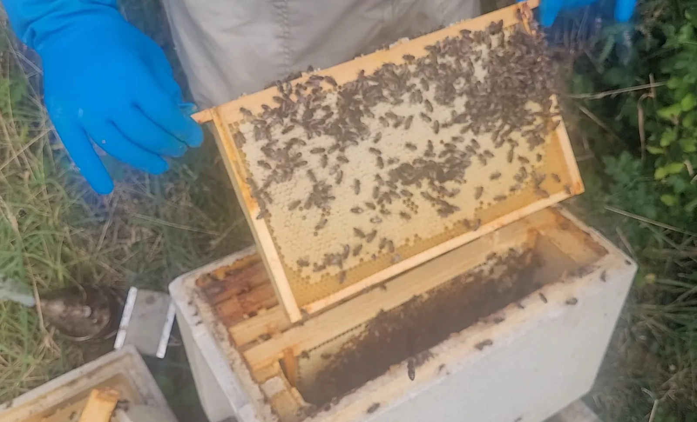
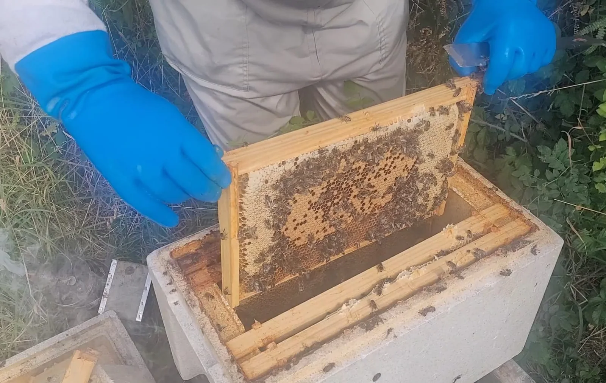

Last updated: 27 September 2026

A Nuc That Looked Normal from the Outside
This is one of those beekeeping situations where the entrance did not tell the whole story.
I had a Maisemore six-frame poly nuc that, from the outside, appeared reasonably normal. Bees were entering and leaving the nuc and there was nothing at the entrance that immediately suggested the colony was about to disappear.
When I inspected it, however, there was a much more important problem inside: I could not find a queen and there were no eggs to confirm that a queen was laying. I did find opened queen cells, so my working assumption was that a virgin queen had emerged and could have been out mating, or was still somewhere in the colony but not yet laying.
Virgin queens can be very difficult to spot, and repeatedly opening a colony while a young queen is trying to orientate and mate can do more harm than good. I therefore decided to leave the nuc alone for a while and give it a chance.
12 September: Still Queenless, with No Eggs or Brood
On 12 September 2026 I inspected the nuc again. This time the position was much clearer: there was still no queen, no eggs and no brood.
By this point, the prospect of the nuc successfully producing a laying queen was becoming increasingly poor. September is a difficult time to rely on a virgin queen because suitable mating weather becomes less dependable and drone numbers are falling.
My plan was therefore to combine the remaining bees with another colony rather than allow a small queenless nuc to continue into autumn on its own. I intended to do this on 26 September.
26 September: The Nuc Was Completely Empty
When I returned on 26 September 2026, the situation had changed completely.
There was no normal flight activity at the entrance. Instead, I could see only a few wasps moving around the nuc. When I opened it, the colony had gone. There were no living bees left as a functioning colony, only a few dead bees and dead wasps inside the box.

The photograph above was taken before the colony disappeared. It is a useful reminder that a nuc can still contain a reasonable number of bees while the underlying problem — in this case loss of the queen and failure to establish a replacement — is already serious.
Did They Swarm Because of the Wasps?
My first thought was that the bees had swarmed or abandoned the nuc because of wasp pressure. There certainly were wasps around the box when I returned.
However, I would be cautious about calling this a normal swarm. A reproductive swarm normally leaves with a queen and is part of the colony's reproductive cycle. What happened here was different: the nuc had already been confirmed queenless, without eggs or brood, two weeks earlier.
What I can say — and what I cannot
I cannot prove that wasps caused the colony to disappear. The nuc may have gradually dwindled, bees may have drifted into neighbouring colonies, a virgin queen may have been lost, or the remaining bees may have abandoned the box once the colony became too weak. Wasp pressure could have accelerated the loss, but the wasps may also have taken advantage after the colony had already weakened.
This distinction matters. Seeing wasps in an empty hive does not automatically mean the wasps killed the colony. Weak and queenless colonies are simply much less able to defend themselves, making them particularly vulnerable to robbing and persistent wasp attack.
For more on this specific problem, see Wasps and Beehives in the UK. I also cover other common threats in the Bee Pests guide and the wider Hive Problems section.
What Probably Happened?
There is no way to reconstruct the exact sequence after the event, but the evidence points to a late-season queen failure followed by the loss of an increasingly weak nuc.
The opened queen cells suggested that the colony had attempted to replace its queen. What I did not subsequently see was the important evidence that the attempt had succeeded: fresh eggs and developing brood from a new laying queen.
Once the nuc remained queenless, the population could only move in one direction. No new workers were being produced. Existing workers continued ageing, some may have drifted to stronger colonies, and the shrinking population became progressively less capable of defending the entrance and stores.
By late September, wasps are also searching hard for accessible food. A small, weakened nuc can become an easy target. Whether the wasps were a primary cause or simply the final pressure on an already failing colony, their presence fitted the condition I found when I returned.
The Lesson for Me
The main lesson is not that leaving a possible virgin queen alone was wrong. At the first inspection, giving an emerged queen time to mate and begin laying was a reasonable decision.
The more important point was the time of year and the condition of the colony at the next inspection. Once I reached 12 September with no queen, no eggs and no brood, there was very little margin left. I had already decided to unite the nuc, but in hindsight the two-week delay before carrying out the unite gave a vulnerable colony more time to decline.
If I faced the same situation again this late in the season, I would be inclined to act sooner once I had satisfied myself that there was no laying queen and no realistic sign of successful queen replacement.
What I Will Watch More Closely in Future
- Queen status rather than entrance activity. Bees flying normally does not prove that a colony is queenright.
- Fresh eggs. They are one of the clearest practical signs that a replacement queen has successfully mated and started laying.
- The calendar. A queen problem in May or June is very different from the same problem in September.
- Colony strength. A shrinking nuc has less ability to defend itself against wasps and robbing.
- Wasp pressure. Persistent wasps around a weak nuc deserve attention even when they are not necessarily the original cause of the problem.
- How long I wait before uniting. Late in the season, once queenlessness is confirmed, delaying can remove options rather than create them.
A Useful Reminder: Entrance Activity Is Only Part of the Picture
This nuc reinforced something I have mentioned before: do not judge a hive only by what you see at the entrance.
A colony can have bees coming and going while still having a serious internal problem. In this case, the important information came from opening the nuc and checking queen status, eggs and brood.
Unfortunately, by the time I returned to unite it, there was no colony left to save. It was a disappointing result, but it is exactly the sort of apiary experience worth recording because the lesson is more useful than pretending every colony can be rescued.
Frequently Asked Questions
Yes. A small queenless colony can gradually dwindle, drift into neighbouring colonies or abandon the box. Without a laying queen there are no new workers replacing the ageing population.
Heavy wasp pressure can contribute to the collapse or abandonment of a weak nuc. However, wasps are also opportunistic and may become obvious only after a colony has already become too weak to defend itself.
I cannot know for certain. Because the nuc had already been confirmed queenless with no eggs or brood, I would not describe the disappearance confidently as a normal reproductive swarm. Drifting, queen failure, abandonment or collapse under late-season pressure are all possible explanations.
Successful queen mating depends on suitable weather and available drones. Both become less dependable as autumn approaches, while a queenless colony is simultaneously losing population because it has no new brood coming through.
Join the Conversation
Beekeeping is all about learning from one another. Follow BeezKnees for more practical UK beekeeping guides, seasonal observations and real apiary experiences.
Follow the BeezKnees Facebook Page